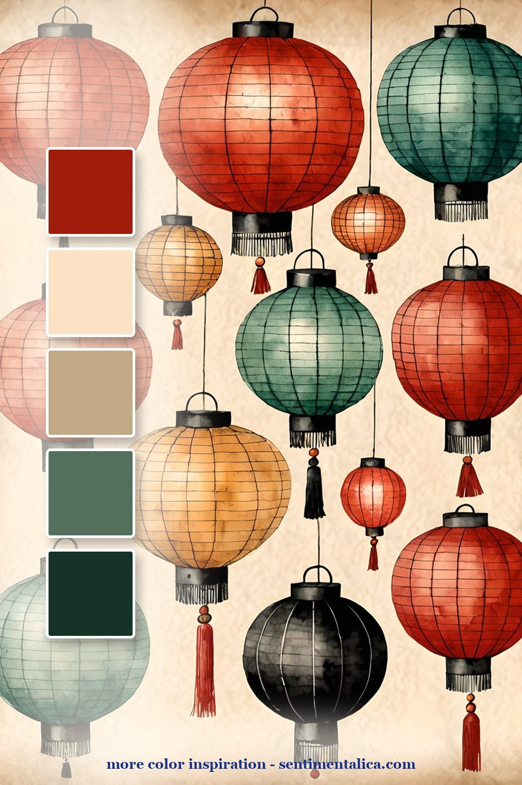
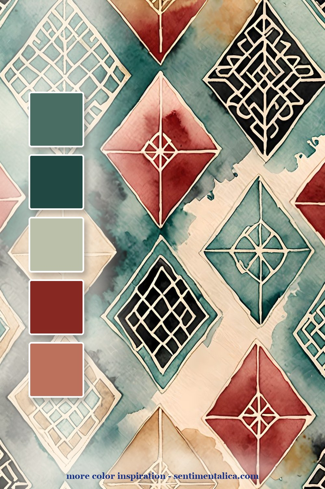
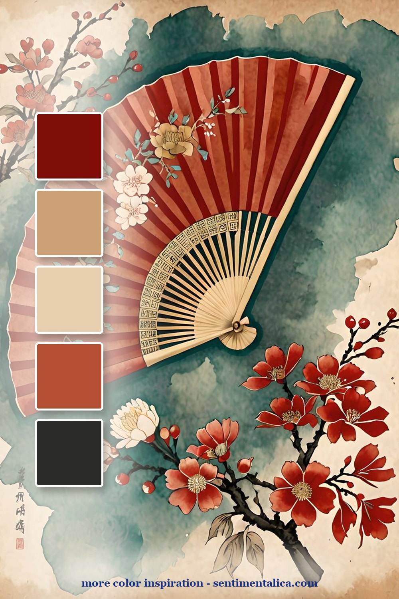
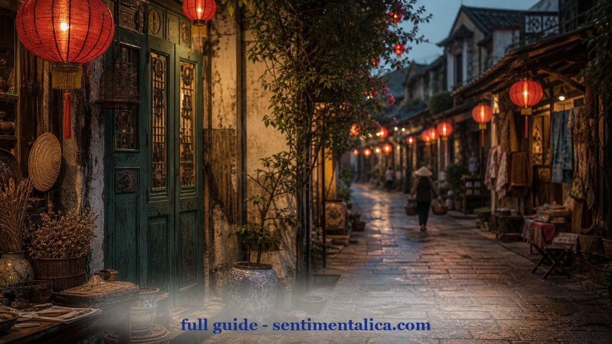
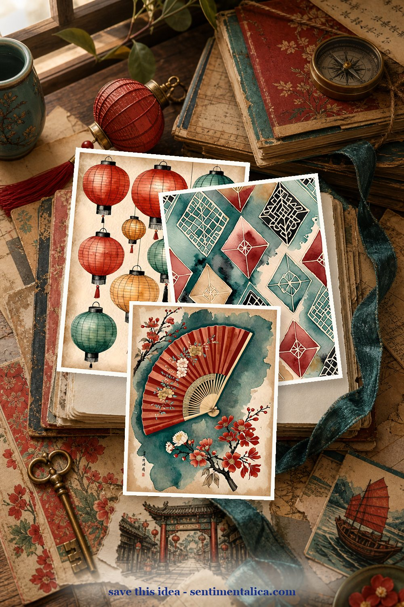
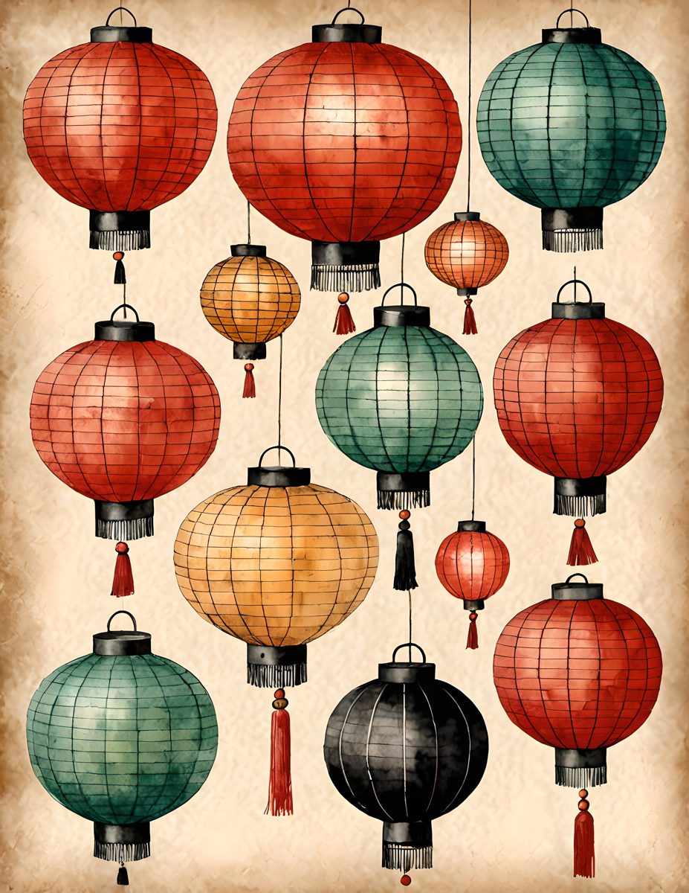
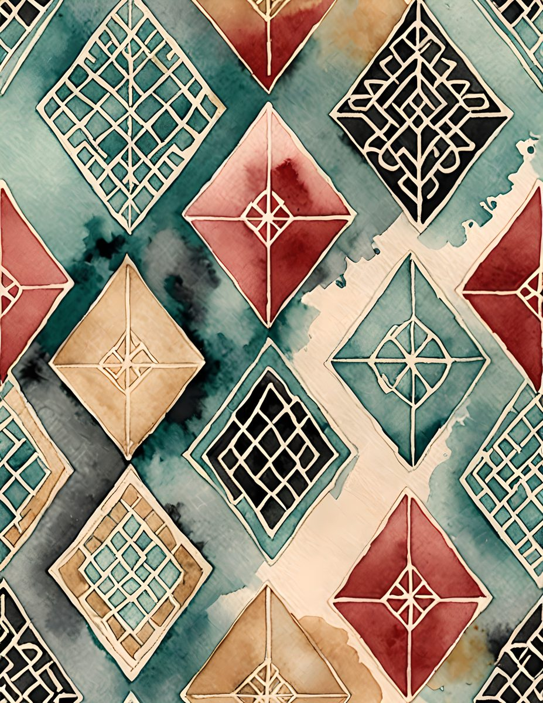
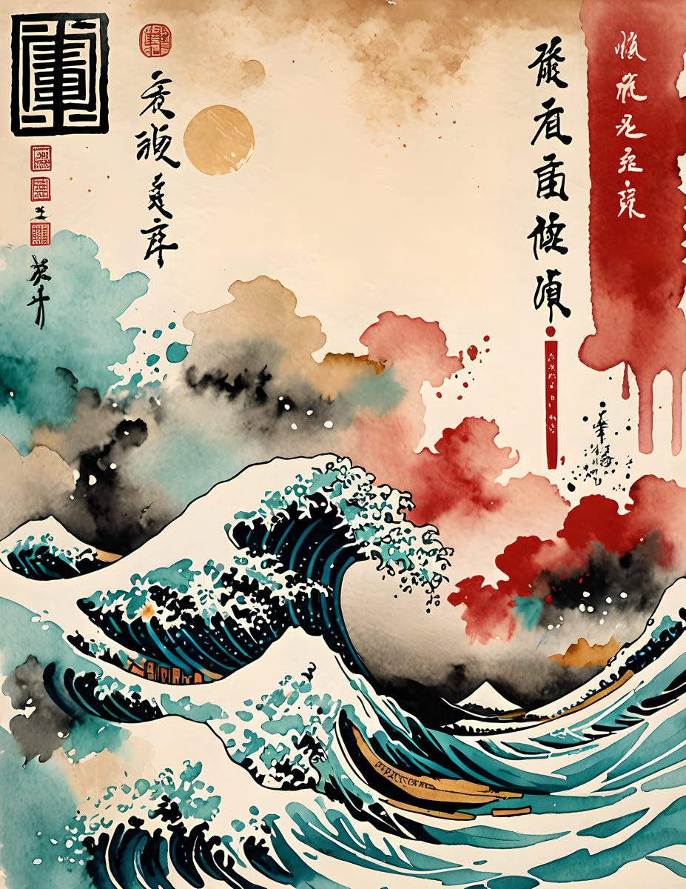

A travel journal page does not need a plane ticket to feel collected. Color can do the work: red lanterns, teal pattern, aged cream paper, and one small object that feels like it came home in your pocket.

The lantern palette is bright but still old-world. Let red be the spark, teal be the calm, and cream be the page you write on. It is a good combination for a divider page or a spread about a place you want to remember.

The geometric pattern is the best background layer. Cut it into strips or use it as a pocket lining so the page has rhythm without becoming too loud. Pair it with a plain journaling card to keep the eye from getting tired.

The fan and blossom page adds softness. Use it when you want the spread to feel like a souvenir rather than a map. A single fan motif, a torn note, and one red accent are enough.

Make it feel lived-in
The beautiful part is the repetition. Pick five colors from one page, then repeat them in tiny places: a tab, a thread, a torn edge, a sticker, a date label. The page starts to feel designed because the colors keep answering each other.

Real pages to start from
The matching printable pages are useful when you want a travel mood that feels collected and decorative, not generic. Start with one bold red piece, then repeat teal in small places.



For more color inspiration, browse the full Sentimentalica journal archive and save the palette idea you want to try next.